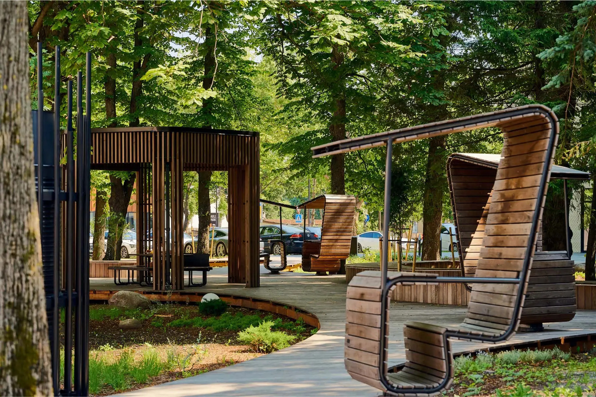

About Me
I am a landscape architect and urban designer with over 10 years of professional experience in landscape architecture, urban design, and 3D visualization.
My professional journey has involved working on a variety of projects, including public parks, educational facilities, residential landscapes, and urban environments. I am passionate about creating functional, sustainable, and visually appealing outdoor spaces that improve people's everyday lives.
I hold a Master's degree in Landscape Architecture from the Estonian University of Life Sciences. My approach combines creativity, technical knowledge, and modern digital design technologies.
My Professional Experience
Throughout my career, I have participated in landscape architecture and urban design projects of different scales and complexities.
My experience includes developing landscape concepts, producing technical drawings, creating detailed 3D models, and coordinating Building Information Modeling (BIM) workflows.
I have contributed to projects such as public parks, kindergartens, residential developments, and public infrastructure. These experiences have strengthened my ability to combine creative design ideas with practical construction solutions.
My Skills
My professional skills include landscape design, urban planning, BIM coordination, technical documentation, 3D modeling, and architectural visualization.
I work with a variety of professional software tools, including Vectorworks Landmark, AutoCAD, Autodesk Revit, SketchUp, Twinmotion, Lumion, and QGIS.
I am particularly interested in using digital technologies to improve design quality, collaboration, and efficiency throughout the project development process.
My Photography
Photography is an important part of my interest in landscape architecture. Observing real outdoor environments helps me understand how people interact with public spaces and natural elements.

This photograph highlights the relationship between architecture, landscape, and nature. The wooden seating structures, pedestrian pathways, and surrounding greenery create a welcoming and comfortable public space.
I believe that successful landscape architecture should combine functionality, sustainability, and visual quality while providing enjoyable outdoor environments for communities.
My Design Philosophy
I believe that landscape architecture is more than simply designing attractive outdoor spaces. It is about understanding the relationship between people, nature, and the built environment.
My goal is to create sustainable landscapes that respect their surroundings, support biodiversity, and provide meaningful experiences for the people who use them.